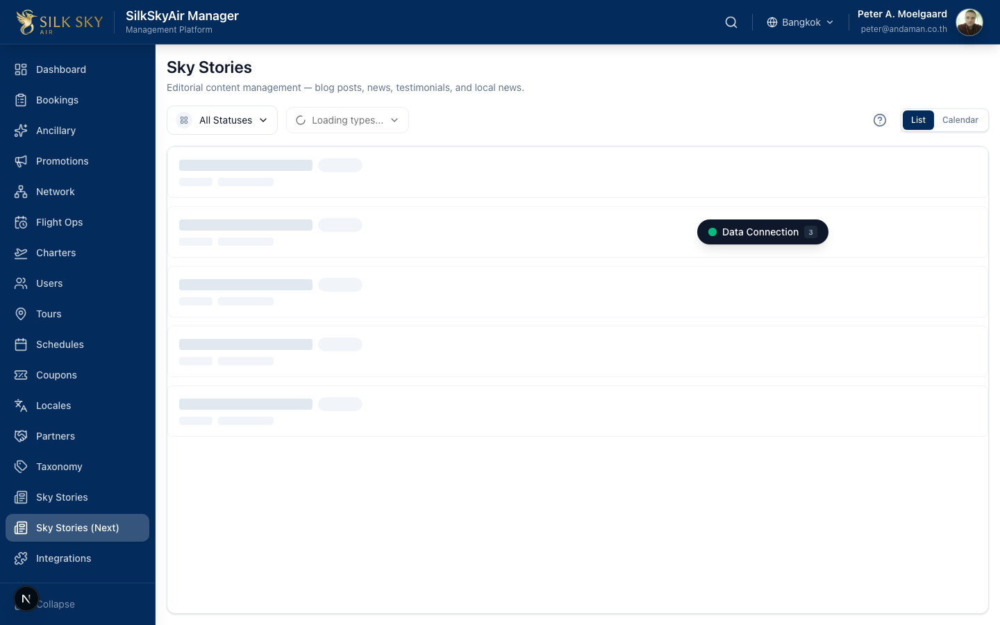
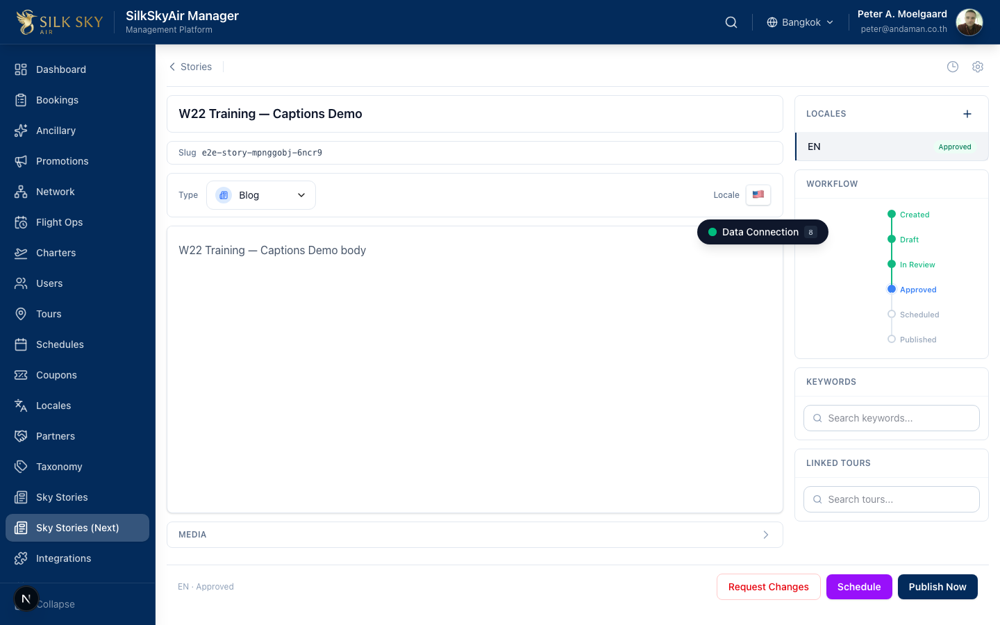
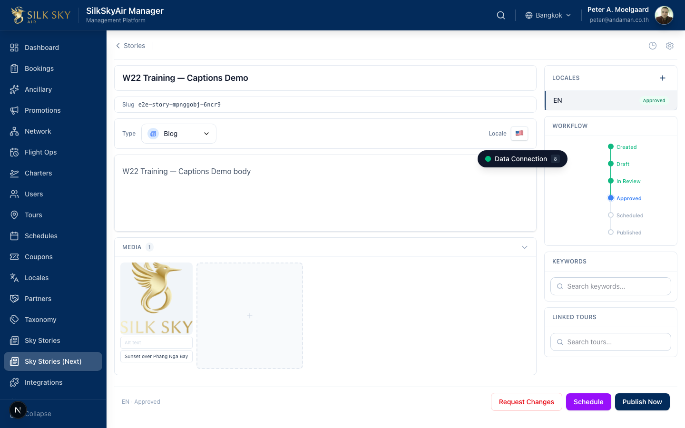

Captions & Media Editing
App: BackOffice Who uses it: Content editors and marketing staff who maintain Sky Stories. What it does: Captions and alt-text on Sky Story media tiles are edited inline in BackOffice. Changes save automatically when the field loses focus (auto-save on blur).
Before you start
- Staging URL:
https://staging.manager.silkskyair.com - Account:
peter@andaman.co.th - Prerequisites: at least one Sky Story exists with at least one media item attached.
Step-by-step
Step 1 — Open SkyStories
Sign in and navigate to SkyStories (URL: /sky-stories-next).

What you should see: A list of Sky Stories with their status and last-modified time.
Step 2 — Open a story
Click into any story.

What you should see: The story editor. A Media section toggle is visible.
Step 3 — Open the Media panel
Click the Media button to expand the panel.
What you should see: Thumbnails of the story's attached media. Each tile has two text inputs below it: Alt and Caption.
Step 4 — Edit the caption
Click into the caption input under any media tile and type a new caption.
What you should see: The caption input is identified by data-media-caption-for="<mediaId>". The store updates optimistically while you type — no flicker.
Step 5 — Auto-save on blur
Click outside the field (or tab away). After a short debounce (~800 ms) the change is persisted to the API.

What you should see: The new caption remains in place. The page does not flicker. Refreshing the page confirms the caption was persisted. (There is no explicit Save button — blur is the save trigger.)
Tips & common questions
- Why doesn't a Save button appear? Auto-save on blur. Walk away from the field and the API call fires after ~800 ms.
- What if I navigate away too fast? Internally a
flushAllruns on navigation, so unsaved edits flush before the page changes. - Are captions translated automatically? No. Captions are edited per locale — switch the editor locale and edit each one.
- What's the difference between Alt and Caption? Alt is for accessibility / screen readers; Caption is the visible text shown on the public site under the image.